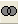

| Note: クエリビルダ はOriginの32bit版で のみ ご利用頂けます。Origin 64-bit のみインストールされているパソコンでは、SQL編集とデータベースデータのインポートにSQLエディタが利用出来ます。ファイルの追加または削除および修正を実行して、32bit版、64bit版Originの両方にインストールできます。 |
クエリの作成は、データベースに関する知識が必要です。Originは事前に作成したクエリ(Accessデータベース)を使ったり、クエリビルダダイアログでクエリを作成することができます。事前に作成したクエリがあれば、「メイン」領域を右クリックして、「オブジェクトの追加」メニューを使って、「ビュー」タブから選択します。適切に操作するために、'Provider' と'Dialect' (設定：オプションをご覧ください)は含まれる必要があります。
ソースオブジェクトと派生テーブルを選択し、その間のリンクを作成し、出力するデータを選択して、新しいクエリを作成することができます。この領域は、リンクとオブジェクトのプロパティを編集することもできます。例えば、ここでオブジェクトに対するエイリアスを定義することができます。
この領域にオブジェクトや派生テーブルは、領域の空白部分を右クリックし、「オブジェクトの追加」または「サブクエリの追加」を追加すると、追加されます。派生テーブルが追加されると、それに対応するタブが作成されます。メインクエリと同じ方法で、視覚的に派生テーブルに関連したサブクエリを編集できます。この派生テーブルを表すオブジェクトの最大化ボタンを押すと、それに対応したタブを開きます。
また、右側の領域からメイン領域にテーブルやビュー(クエリ)をドラッグすることもできます。
出力したいフィールド名の左側のチェックボックスにチェックを付けます。オブジェクトのすべてのフィールドを出力したい場合、オブジェクトのアスタリスクの左側のチェックボックスにチェックを付けます。出力からフィールドを削除するには、チェックボックスのチェックを外すだけです。
ソースオブジェクトのプロパティを編集するには、それを右クリックし、ショートカットメニューから「プロパティ」を選びます。ソースオブジェクトの編集可能なプロパティは、サーバにより異なります。しかし、常にエイリアスを定義したり、変更することができます。
2つのオブジェクトを結合するには、1つのオブジェクトのフィールドを選択し、別のオブジェクトの対応するフィールドにドラッグします。2つのフィールド間に線が表示されます。これは、「内部結合」を作成します。他のタイプの結合を作成するには、結合線を右クリックし、ショートカットメニューから「プロパティ」を選択します。結合を削除するには、ショートカットメニューから「削除」を選ぶか、結合線をクリックして、Delキーを押します。
クエリ作成領域について、ページ制御オプションがあります。それを使って、メインクエリとサブクエリ間を自由に切り替えることができます。
クエリビルダの右上にある アイコンは、UNIONサブクエリを操作します。このオプションを使って、新しいUnionサブクエリを追加したり、操作を実行することができます。
新しいUnionサブクエリを追加するには、このアイコンを右クリックし、ショートカットメニューから、「Unionサブクエリの作成」を選択します。もう一つ アイコンと、Uniting コントロール  の間は次のように表示されます。
1つ以上のサブクエリがあると、このショートカットメニューは以下のことを行うことができます。
統合操作を設定するには、Uniting アイコンを右クリックします。すると、別のショートカットメニューが現れ、次のいずれかからUnionの演算子を選ぶことができます。
列領域で、出力するフィールドを選択し、そのフィールドに対するエイリアスをセットし、ソートやグループをすることができます。
各フィールド名の前にチェックボックスがあります。チェックが付いてると、そのフィールドがクエリ結果に含まれます。クエリ出力からフィールドを削除したい場合、フィールド名の前のチェックボックスのチェックを外します。これは、列領域にフィールドを保持していて、ソートやグループをセットする目的のために、出力から除外したい場合に役立ちます。
「式」列には、現在のクエリに追加されるフィールド名が表示されます。ドロップダウンリストを使って、フィールドを選択し、この領域に追加することができます。さらに、この列に「(Select)」を入力して、サブクエリを作成することができます。
出力フィールドに対するエイリアスを定義するには、「別名」列にエイリアスを入力します。
Aggregate 列で、集計機能を選択することが出来ます。 (平均、カウント、合計、...;)
「ソート種別」列と「ソート順序」列は、クエリ結果のソートを設定するのに使用します。これは昇順か降順から選べます。「ソート順序」列は、複数フィールドをソートするのに使用します。これはフィールドをソートする順序を指定します。
「Grouping」列は、グループ化を設定します。このチェックボックスにチェックが付いていると、現在のフィールドは「Group By」式に追加されます。また、列の条件も表示されます。グループデータに対する条件を設定する場合、列の条件で「グループ」を選び、「条件」列に条件を入力します。
「条件」列には、 Where 式(「Grouping」チェックボックスのチェックが付いていないか、 「Grouping」チェックボックスのチェックが付いていて「条件」で「For Values」 が選択されている場合) または、 GroupBy と組み合わせて使用するHaving式(「Grouping」チェックボックスのチェックが付いているか、「条件」で「For Groups」 が選択されている場合)で使われる条件を定義します。式(フィールド名)は省略されます。次の条件をクエリで使用するものとします。
「条件」列に次のように入力します。
この列はサブクエリを作成することもできます。この列を右クリックして、「サブクエリの挿入」を選択します。サブクエリが追加され、クエリ作成領域に追加されたサブクエリタブをクリックして切り替えることができます。
いくつかの条件を指定するには、「または」列を使用します。条件は、クエリ文のOR演算子を使って接続されます。これは、条件を合成するのに使用することができます。
クエリツリー領域で、クエリのアウトラインを表示することができます。これを使って、クエリの一部をすばやく切り替えることができます。
この領域は、現在のクエリにあるテーブル、ビュー、関数元のオブジェクトを追加することができます。元のオブジェクトを追加するには、それをダブルクリックすると、クエリ作成領域にそれをドラッグします。
プレビュー領域は、結果をプレビュー表示し、現在のクエリを評価することができます。この領域は表示プレビュー ボタンまたは プレビューなし  ボタンを切り替えられます。
ボタンを切り替えられます。
プレビュー領域を表示していて、「プレビュー」ボタンをクリックすると、プレビュー領域のデータが更新されます。
このボタンをクリックして、SQLクエリ文を表示します。ダイアログボックスが開きます。このダイアログボックスで、SQLクエリ文を編集し、変更を適用することができます。
このボタンをクリックすると、クエリを適用して、アクティブワークシートに結果をインポートすることができます。